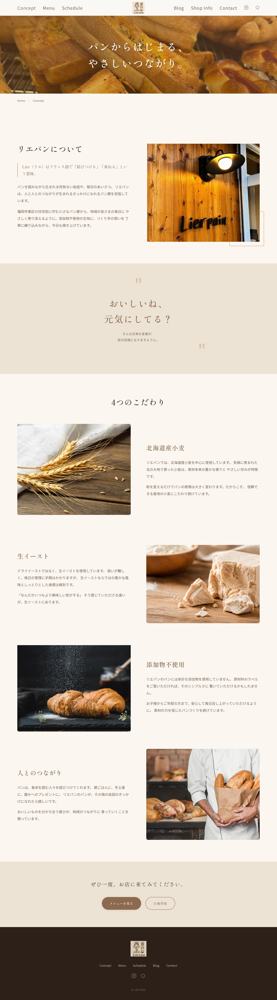
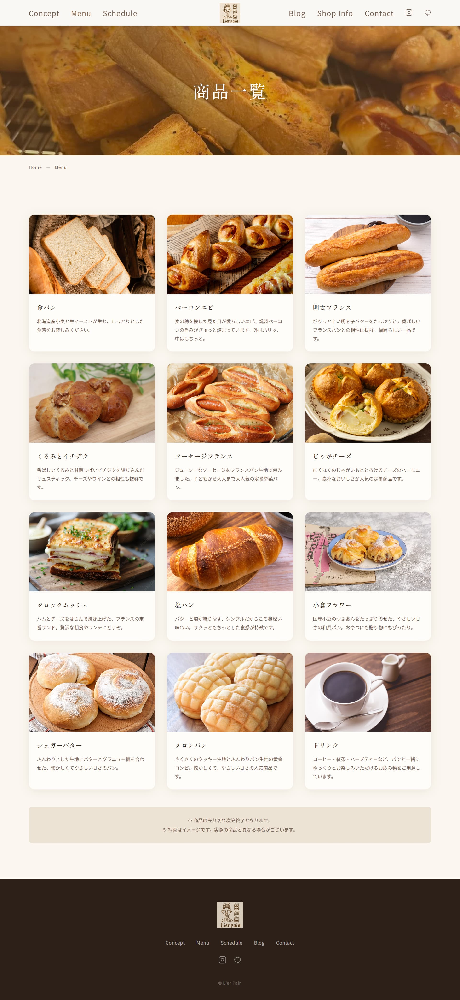
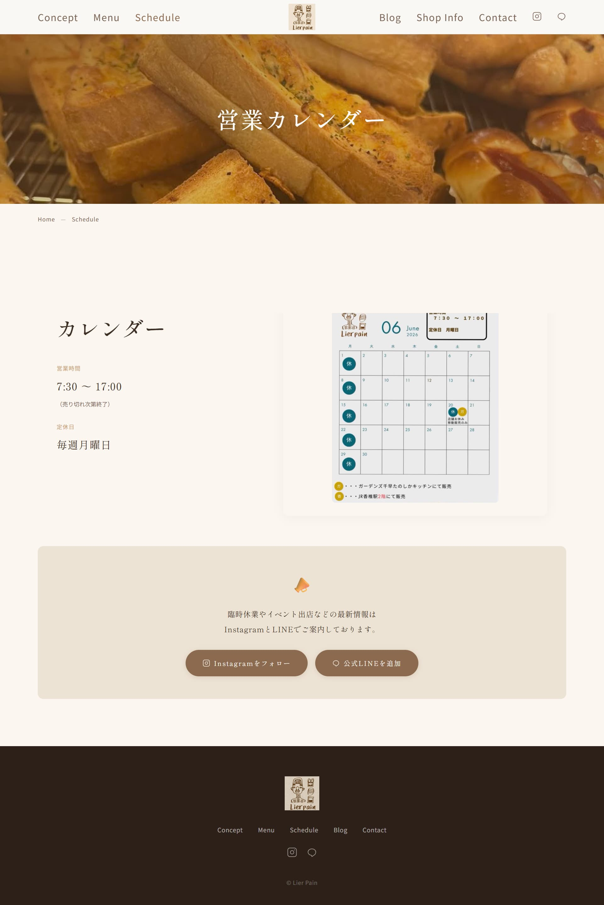
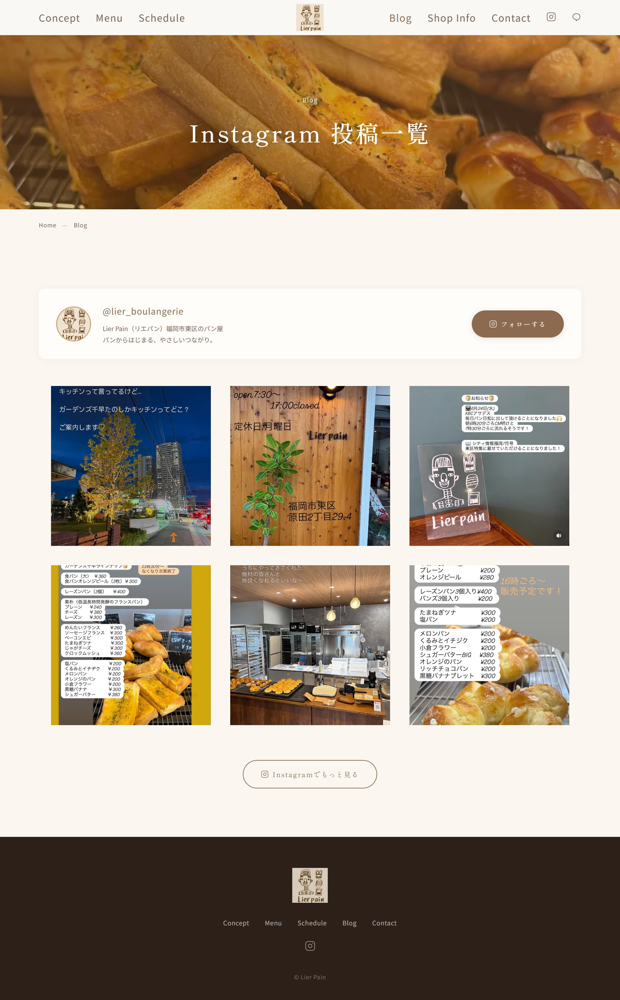
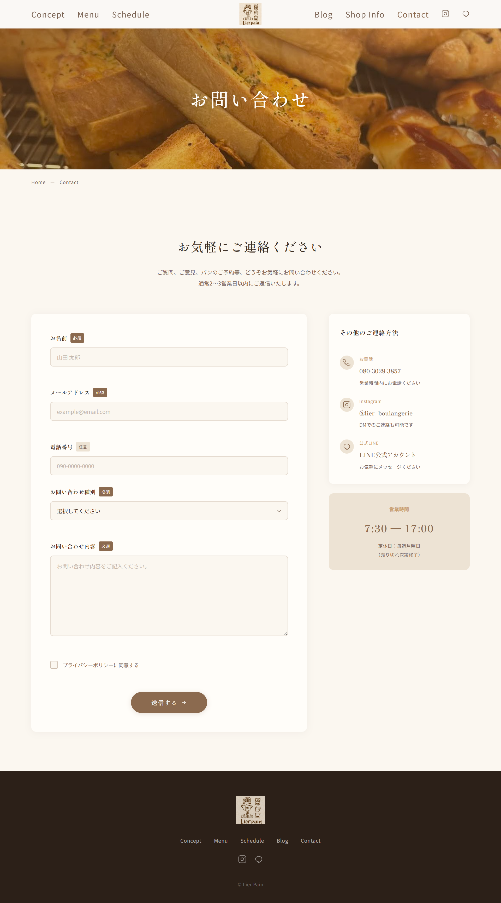

- サービス設定 福岡市東区のパン屋「自主制作」のホームページ。知人のお店のサイトを自主的に制作させていただいた作品で、現在は非公開。天然素材へのこだわりと地域とのつながりを伝えることを目的としたサイト。
- ターゲット 福岡市東区周辺に住む地元の人々。日常的にパンを楽しみ、地元のお店を大切にしたいと思っている層。
- 目的 お店の温かい雰囲気やこだわりをWebで伝え、初めての方の来店と常連客のリピートを促す。
- コンセプト 「地元に根ざした、毎日のパン屋」。天然素材へのこだわりと人とのつながりを大切にする自主制作らしさを、温もりあるデザインで表現する。
- サイト構成 トップ（ファーストビュー） → コンセプト・想い → 商品紹介 → こだわり素材 → アクセス・営業時間
- デザイン クラフト紙・小麦・木材をイメージしたアースカラーを基調に、手作りの温もりと素朴さを表現。写真を大きく配置し、店の雰囲気がそのまま伝わるようなレイアウト。





